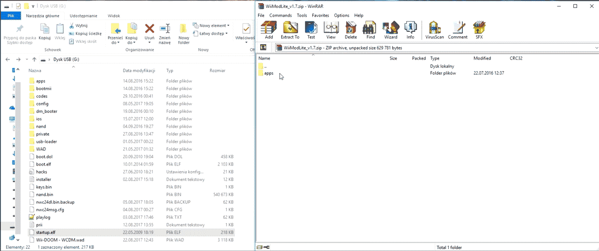
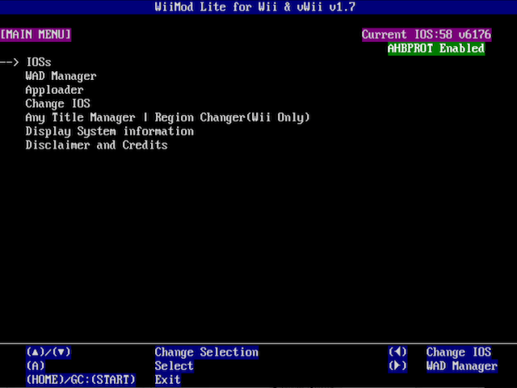
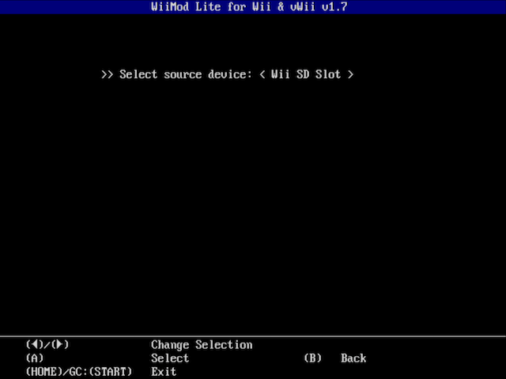
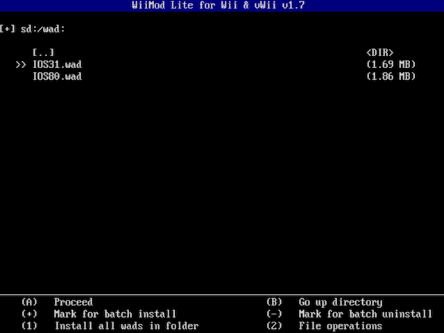

Wii Mod Lite
Für Unterstützung in englischer Sprache, frag unter folgendem Link nach Hilfe: RiiConnect24 bei Discord.
Solltest du hinsichtlich dieses Tutorials Hilfe benötigen, trete bitte dem RiiConnect24 Discord-Server bei (empfohlen), oder kontaktiere uns per E-Mail unter [email protected].
Dieses Tutorial wird dir erklären, wie du WADs auf deiner Wii mithilfe von Wii Mod Lite installieren kannst. Der WAD-Manager den wie hierzu empfehlen ist Wii Mod Lite, aber es gibt auch andere, wie beispielsweise YAWMM.
Wir empfehlen nicht die Verwendung des “WAD Manager” von Waninkoko.
Voraussetzungen
- Eine SD-Karte oder ein USB-Laufwerk
- Wii Mod Lite
Anleitung
Abschnitt 1 - Herunterladen
- Entpacke Wii Mod Lite und verschiebe es in den
apps-Ordner deiner SD-Karte bzw. deines USB-Laufwerks.  - Verbinde deine SD-Karte oder dein USB-Laufwerk mit deiner Wii und starte Wii Mod Lite über den Homebrew-Kanal.
Abschnitt 2 - Ausführen
Die Bedienung erfolgt über das Steuerkreuz.
- Wähle
WAD Manager.  - Wähle
Wii SD SlotoderUSB Mass Storage Device, je nachdem, ob du eine SD-Karte oder ein USB-Laufwerk verwenden möchtest.  - Wähle die WAD-Datei, welche du installieren möchtest. In diesem Beispiel installieren wir das gepatchte IOS, welches für RiiConnect24 benötigt wird. Du kannst mehrere WADs auf einmal markieren, indem du den Plus-Knopf drückst. 
- Drücke zweimal den A-Knopf, um die Installation zu starten.


- Wenn
Finishing installation... OK!angezeigt wird, wurde die WAD-Datei erfolgreich installiert.